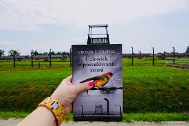
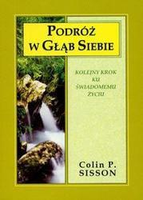
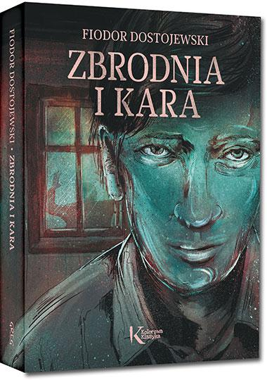
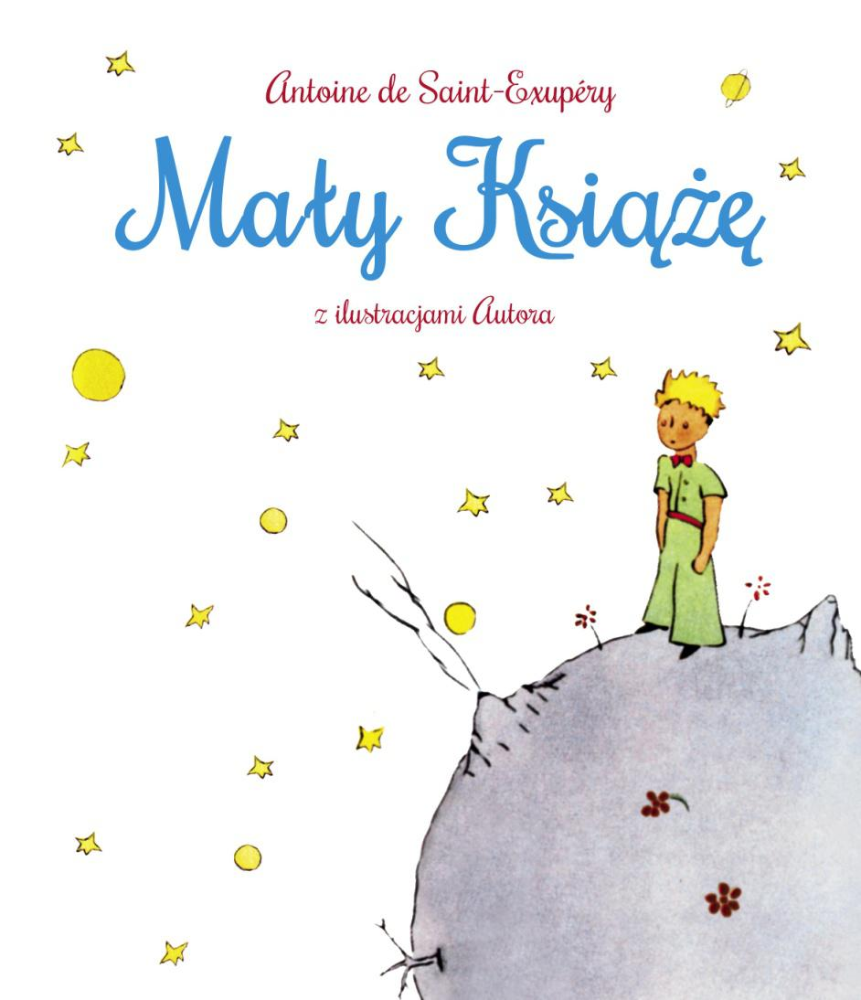

Victor Frankl – “Człowiek w poszukiwaniu sensu”Opowiada ona o pobycie autora w kilku różnych obozach koncentracyjnych. Skonfrontowany ze strasznym cierpieniem i stratą, Frankl przetrwał dzięki odnalezieniu w tym wszystkim sensu. Zdał sobie sprawę, że chociaż możemy zostać pozbawieni większości swobód, jednej nikt nam nie odbierze – wolności do wyboru w jaki sposób myślimy i działamy nawet w najgorszych okolicznościach. “Podróż w głąb siebie” C.P. SissonPiękna lektura napisana przez bardzo doświadczonego przez życie człowieka. Opowiada o swojej przemianie duchowej i o drodze do równowagi. Sporo treści jest poświęcone ważnej roli oddychania. Autor jest twórcą programu Integracji Oddechem, a w książce udowadnia, że oddech ma naprawdę potężną moc uzdrawiania. Książka jest pełna inspirujących metafor, które dokładnie odzwierciedlają pułapki, w które sami się zapędzamy. „Zbrodnia i Kara” Fiodora DostojewskiegoLektura ważna w życiu, ale też w biznesie, opowiadająca o potrzebie posiadania korpusu etycznego. Nie da się funkcjonować bez sięgania w głąb samego siebie i świadomego rozpatrywania swoich działań, umiejętności rozróżniania dobra od zła. Uniwersalny podręcznik do etyki. Książka, którą każdy człowiek powinien przeczytać . "Mały Książę" Antoine de Saint-ExupéryCi, którzy sądzą, że jest to wyłącznie książka dla dzieci, są w ogromnym błędzie. Uniwersalna, piękna opowieść o przyjaźni, miłości i oddaniu, owiana nutką tajemnicy. Saint-Exupéry w tej baśniowej opowieści o małym złotowłosym chłopcu mówi też o odpowiedzialności, samotności i cierpieniu. Bez zbędnego moralizowania, w sposób prosty i bezpośredni, z dziecięcą naiwnością i otwartością dzieli się z czytelnikami refleksjami nad tym, że dobrze widzi się tylko sercem. To, co najcenniejsze, jest niewidoczne dla oczu. |
|---|